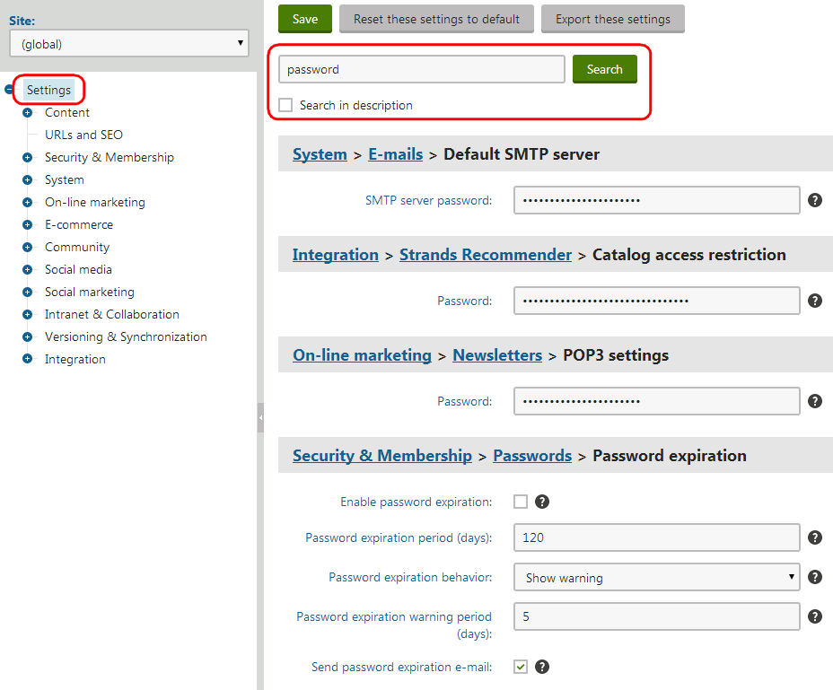

Configuring settings for sites
You can configure settings for sites in the Settings application.
There are two basic types of settings:
Global – apply to all sites in the system, unless individual sites override the values.
Site-specific – apply to the selected Site. The site settings load the global values unless you disable the Inherit from global settings option for individual settings and enter different values.
Notes
Some settings are only available as global settings.
Settings that alter page markup on the live site may not come into effect immediately. You may need to wait for the site's output cache to expire or clear the cache manually in the System application.
Accessing the settings application
Only two types of users can configure settings in the Settings application:
Users with the Global administrator privilege level
Users who belong to roles with the Configure settings permission for the CMS module
Users without the Global administrator privilege level can only configure setting values for the current site (global-only settings are not available), and cannot access certain security-sensitive settings.
Searching for settings
There is a very large number of settings in Kentico. To find a particular setting among all the categories:
In the Settings application, select the root of the settings tree (Settings).
Type the name of the setting or related words into the field at the top of the page.
Click Search.
If you check Search in description, the search also finds settings that have the given text in their description (tooltip).
The page displays all settings that contain the search text in their name. You can edit the values of the settings directly.

Searching for settings
Resetting settings
Users with the Global administrator privilege level can reset settings to their default values:
Select a category in the Settings application.
Choose (global) in the Site selector above the settings tree.
Click Reset these settings to default.
Click OK in the confirmation dialog.
Click Save.
All settings in the given category now have the default value defined in the Default value property of the corresponding keys.
Exporting the setting values
Users with the Global administrator privilege level can export the values of all settings in the selected category to a text file. Click Export these settings in the header of the setting page. Exporting settings can be useful, for example when consulting issues with Kentico support.
Loading the values of settings in code
The Kentico API allows you to check the values of settings in your code. You can load values of both the default and custom settings.
Call the following methods of the SettingsKeyInfoProvider class according to the data type that you wish to use for the setting's value:
GetBoolValue
GetValue (for string values)
GetIntValue
GetDecimalValue (usable with settings of the Floating-point number type)
GetDoubleValue (usable with settings of the Floating-point number type)
The methods accept a string parameter that identifies the setting in the following format: <site code name>.<settings key code name>
Note: When loading global-only settings, only enter the code name of the required settings key in the parameter.
For example:
using CMS.DataEngine;using CMS.SiteProvider;...string value = SettingsKeyInfoProvider.GetValue(SiteContext.CurrentSiteName + ".CMSDefaultAliasPath");Getting setting values in macro expressions
Note: Only users with the Global administrator privilege level can create macros that load the values of settings. The Configure settings permission for the CMS module is not sufficient for this purpose.
Macro expressions allow you to:
Dynamically insert the values of settings into most fields in the Kentico administration interface
Work with settings in macro conditions or other expressions with advanced logic
You can load values of both the default and custom settings.
Use the following expression to get setting values inside macros: Settings.<settings key code name>
For example:
{% Settings.CMSStoreFilesInFileSystem %}The macro returns the setting's value for the currently running site (or the global value for global-only settings). If you need to access the global value of a setting, you can use the following macro expression: GlobalObjects.SettingsKeys.<settings key code name>.KeyValue